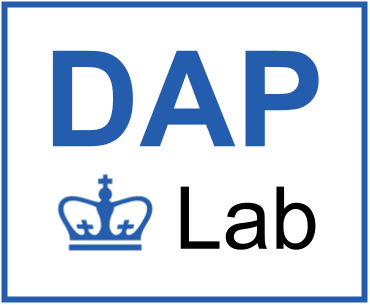

PETERYU
> I BUILD HIGH-PERFORMANCE AI SYSTEMS THAT HOLD UP UNDER REAL-WORLD COMPLEXITY.
EXPERIENCE
SOFTWARE ENGINEER
OpenAI · SEGFALL 2026
SOFTWARE ENGINEER
OpenAI · SEGI’ll be joining SEG as a software engineer for Fall 2026. More details soon.
QUANTITATIVE SOFTWARE DEVELOPER INTERN
MILLENNIUM MANAGEMENT · EQSSUMMER 2026
QUANTITATIVE SOFTWARE DEVELOPER INTERN
MILLENNIUM MANAGEMENT · EQSI built agent-enabled tools that made portfolio liquidity optimization decisions easier to explain across UAT and production, helping liquidity-risk teams get answers without waiting on manual investigations.
- Built LangGraph and MCP-based interpretability and regression tooling for three portfolio liquidity optimization services, cutting prod–UAT root-cause analysis time by 70% and accelerating production releases.
- Architected a CLI-native C++ gRPC integration that replaced multi-table SQLAlchemy joins with typed service APIs, accelerating benchmarked regression queries by 21× and supporting runs exceeding 190K rows.
- Improved the database MCP server by validating and rewriting queries to follow index-aware patterns, making database access faster and more reliable for Claude Code workflows.

AI SAFETY RESEARCHER
COLUMBIA · DAPLab2025 – PRESENT
AI SAFETY RESEARCHER
COLUMBIA · DAPLabI research worst-case behaviors of agentic systems in adversarial environments and develop deterministic data-flow controls for safe, interpretable long-horizon execution.
- I studied Google’s CaMeLs provenance-based interpreter and its approach to tracking agent behavior.
- I built a LangGraph agent framework to probe pre- and post-tool-call hooks, inspect metadata, and evaluate interventions that modify or block unsafe tool calls and prompt injections.
SOFTWARE ENGINEERING INTERN
CRUX DATA · ArrayXSUMMER 2025
SOFTWARE ENGINEERING INTERN
CRUX DATA · ArrayXI built and maintained backend infrastructure for a multi-agent pipeline orchestration platform that automated large-scale ETL workflows with self-healing capabilities.
- Built and maintained backend infrastructure for a multi-agent pipeline orchestration platform automating large-scale ETL workflows with self-healing capabilities.
- Improved response quality by 25% and reduced delegation errors by 30% by splitting a supervisor agent into orchestrator and supervisor agents to reduce cognitive complexity.
- Designed, built, and integrated a new scheduler agent using the OpenAI Agents framework for recurring data-pipeline execution, including prompts and tools such as
set scheduleandrun schedule.

CO-FOUNDER
AIttire.ioSUMMER 2024
CO-FOUNDER
AIttire.ioI co-founded an early-stage AI fashion discovery product for finding clothing from natural-language occasion descriptions, such as a summer party in the South of France.
- Built a web app that generates scenes of users in custom outfits from input prompts, personalizing fashion discovery.
- Fine-tuned an SDXL image-generation model using LoRA to generate custom scenes with user-resembling avatars, improving small-sample generation quality by 40% and reducing training time by 55%.
- Overhauled the app with a microservice architecture across auth, gateway, client, and RabbitMQ services, improving uptime by 20%.
- Replaced brute-force similarity scans over high-dimensional OpenAI CLIP embeddings with Pinecone ANN indexing, reducing per-query search from O(n) to approximately O(log n) and cutting hundreds of milliseconds of latency per search.
- Containerized services with individual Dockerfiles and deployed with Kubernetes YAML specs, improving throughput and decreasing queue length by 15%.
PATH: ~/select_projects